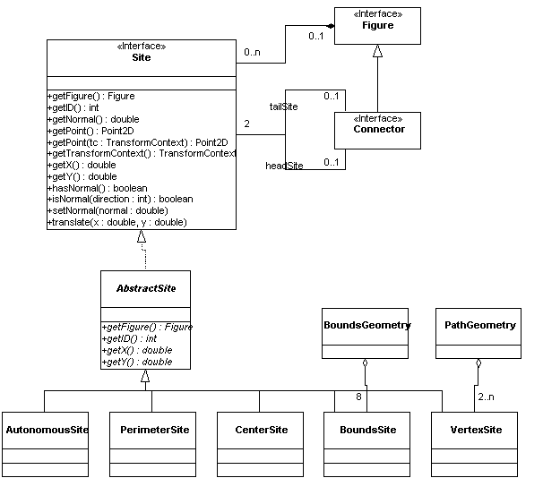

Sites
A Site is an object that represents a particular location on a figure. As such,
it has a location, accessed by methods such as getX() and getY(). The actual
location of the figure is very much dependent on the specific implementation of
the figure. In the canvas, sites are generally used in one of two ways:
- To represent a location on the figure that a grab-handle
is attached to. When the grab-handle is moved, the grab-handle
instructs the site to move, which in turn changes the shape of the
figure. This style of usage is described in more detail in the section
on manipulators.
- To represent a point to which a connector can be attached. A
connector is a line that stays connected to two figure when the
figures are moved, and the properties of the sites to which it is
attached determines to some extent how it behaves when one of the
figures is moved. This style of usage is described in more detail in
the section on connectors.
These are not the only ways sites can be used. For example, a site could be
used to represent a point at which a label could be attached to a figure.
The following diagram shows the Site interface and related classes.

Each site is associated with zero or one figures. (In general, it
is associated with one: the only kind of site which is not associated
with a figure is AutonomousSite.) In general a figure contains zero or
more sites; in the specific case of Connector, it always has a
reference to two sites, the head site and the tail site.
Each site
may have a normal, which us the angle at which it expects
things to attach to it. The angle is "out" of the figure,
and it positive in the direction if increasing
y-coordinates. Not all figures have a meaningful normal (for
example, the site in the center of a figure), so the hasNormal()
method tests for this. In addition, some clients will need to test if
the normal is on one of the four compass directions (see the
documentation for diva.canvas.manipulator.BoundsGeometry), which is
the purpose of the isNormal() method.
The class AbstractSite
provides default implementations of all of the methods of the Site
interface except those shown in the UML diagram as abstract.Specific
subclasses are not shown in detail, but perform the following
functions:
- AutonomousSite is the only Site implementation not attached to a Figure,
and is used by connectors that are not actually attached to a figure at on
end or the other.
- PerimeterSite attempts to position itself on the perimeter of a figure
based on the figure's shape. If the normal of the site is set with
setNormal(), the site moves its position so that a line connected at
that angle appears to pass through the center of the figure.
PerimeterSite currently works correctly for ellipses and rectangles, and
will assume a rectangle for any other shape.
- CenterSite locates itself in the center of a figure's bounding box.
- BoundsSite is located at one of the four corners and edges of a rectangle.
It is used by the manipulators that reshape a figure based on its bounding
box, such as BoundsManipulator. The BoundsGeometry class shown is a utility
class that contains eight BoundsSites.
- VertexSite is located at a vertex of an arbitrary shape. It is used
by manipulators that reshape a figure based on its vertices. The PathGeometry
class is a utility class that contains a number of VertexSites.